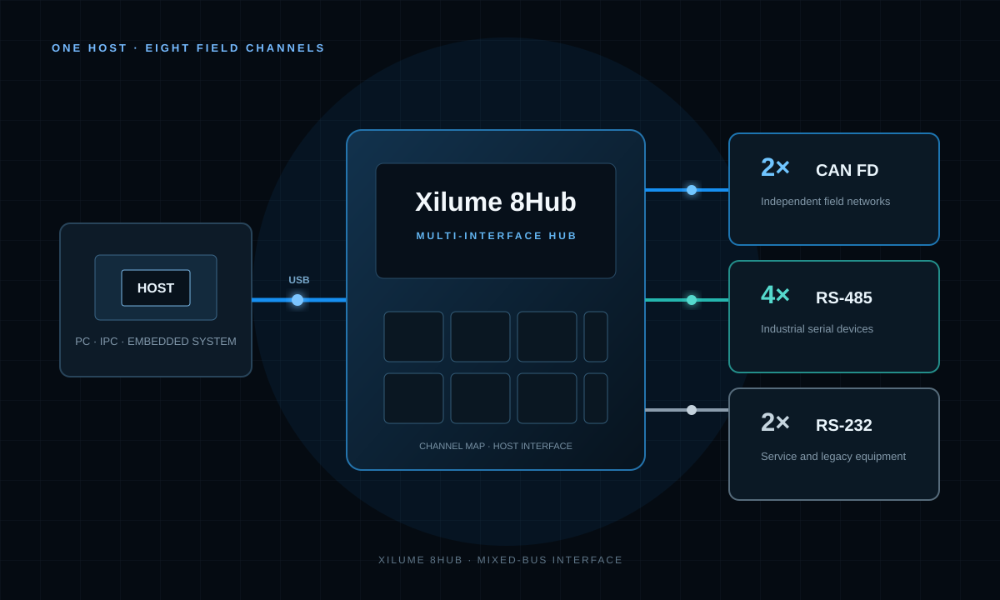

PRODUCT AREA 01
Interface & Protocol Conversion
Connect computers and embedded hosts to vehicle networks, industrial equipment, and smart batteries.
PRODUCT FAMILIES
Start with the job you need done.

CONNECT EIGHT MIXED-BUS CHANNELS
Xilume 8Hub
Bring CAN FD, RS-485, and RS-232 equipment together behind one USB host connection.
USB ↔ 2 CAN FD + 4 RS-485 + 2 RS-232
PC / HOSTCTRLCAN FD 1CAN FD 2
CONNECT TWO VEHICLE OR MACHINE NETWORKS
Dual CAN FD Interface
Use one computer or embedded host to communicate with two independent CAN / CAN FD buses.
USB / Mini PCIe ↔ Dual CAN FD
PC / HOSTCTRL2 × CAN FD2 × RS-485
CONTROL FOUR INDUSTRIAL BUSES
CAN FD + RS-485 Interface
Connect CAN FD equipment and RS-485 devices to the same host through one design.
USB / Mini PCIe ↔ 2 CAN FD + 2 RS-485
 Application image
Application imageDISPLAY BATTERY LEVEL AND STATUS
Battery Display Module
Read battery percentage, voltage, temperature, remaining capacity, cycle count, and status for Windows or Linux integration.
USB ↔ SMBus Smart Battery
CONVERSION PRODUCT FINDER
Build your connection path.
Already know your interfaces? Select three tiles to compare matching modules and Xilume controller ICs.
1Host connection
2Target interface
3Product format
PRODUCT FORMATS